Debugging Parallel Programs
703308 VO High-Performance Computing
University of Innsbruck
Overview
- functional debugging
- generic guidelines
- serial debugging
- parallelism-specific debugging
- performance debugging
- generic guidelines
- serial debugging
- parallelism-specific debugging
Motivation: first Ariane-5 flight, 1996
- Debugging Ariane-5’s maiden flight
- booster nozzles adjusted for a 20% angle of attack, causing vehicle separation, triggering self-destruction
- because a diagnostic bit pattern was sent to on-board computer as flight data
- because a data conversion from 64 bit float to 16 bit signed int overflowed
- because they used Ariane 4 inertial code for Ariane 5, which has larger possible value ranges (velocities)
- and only protected 4 out of 7 critical variables against overflow and not this one because in Ariane 4 velocities were lower
- also, this software component serves no purpose after lift-off (only used for inertial platform alignment before launch)
Motivation: first Ariane-5 flight, 1996
- Debugging Ariane-5’s maiden flight
- booster nozzles adjusted for a 20% angle of attack, causing vehicle separation, triggering self-destruction
- because a diagnostic bit pattern was sent to on-board computer as flight data
- because a data conversion from 64 bit float to 16 bit signed int overflowed
- because they used Ariane 4 inertial code for Ariane 5, which has larger possible value ranges (velocities)
- and only protected 4 out of 7 critical variables against overflow and not this one because in Ariane 4 velocities were lower
- also, this software component serves no purpose after lift-off (only used for inertial platform alignment before launch)
➜ bad choice of sentinel values
➜ compiler warnings!
➜ lack of proper requirement analysis
➜ lack of proper requirement analysis
➜ debugging code active in release
Motivation
- Why do we need debugging?
- Because we make mistakes!
- Why do we need a lecture about this?
- OpenMPI FAQ “Debugging applications in parallel”, first question:
Q: “How do I debug OpenMPI processes in parallel?”
A: “This is a difficult question. […] This FAQ section does not provide any definite solutions to debugging in parallel. […]”
Functional Debugging
Functional debugging
- dealing with everything that results in not getting the correct program output
- program crashes (e.g. segmentation faults, undefined behavior, race conditions)
- program not finishing (deadlocks, infinite loops)
- incorrect output (e.g. undefined behavior, race conditions, arithmetic errors)
- errors can be deterministic or non-deterministic
- all that applies to debugging serial programs is crucial for parallel ones
- If you can’t trust the serial implementation, why would you in a parallel context?
- parallel programming models are just different means to cause the same issues
Debugging effort pyramid
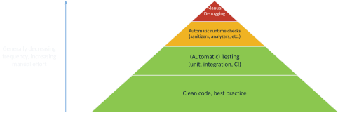
Coding guidelines
- write clean code that prevents bugs or facilitates their detection, e.g.
- use meaningful identifiers
- minimize vertical distance of variables
- don’t use OpenMP’s
private - follow the Don’t Repeat Yourself (DRY) principle (single component per feature)
- …
- The toolchain you must use!
- read & heed compiler warnings
- write and regularly run unit and/or integration tests, especially aimed at (varying degrees of) parallelism
- use code coverage tests
- use continuous integration
- use source version control
“Best of” real commit messages encountered in the past
stufFmanager stuffmore manager stuffMake things work::w:qMerge branch 'master'dl;adlwaAdded performance fix for DataItemManager::get() by caching fragment result in referenceRemoved debug print statementFixed a linking issue of the unwrap_tuple functionRedirected runtime system output to error streamfixing typos
Recommended reading/reference material example
- “Clean Code” by Robert Martin, Prentice Hall 2008
- ISBN 9780132350884
- also available in German
- naming, functions, commenting, formatting, data structures, error handling, unit tests, classes, concurrency, refinement & refactoring, …
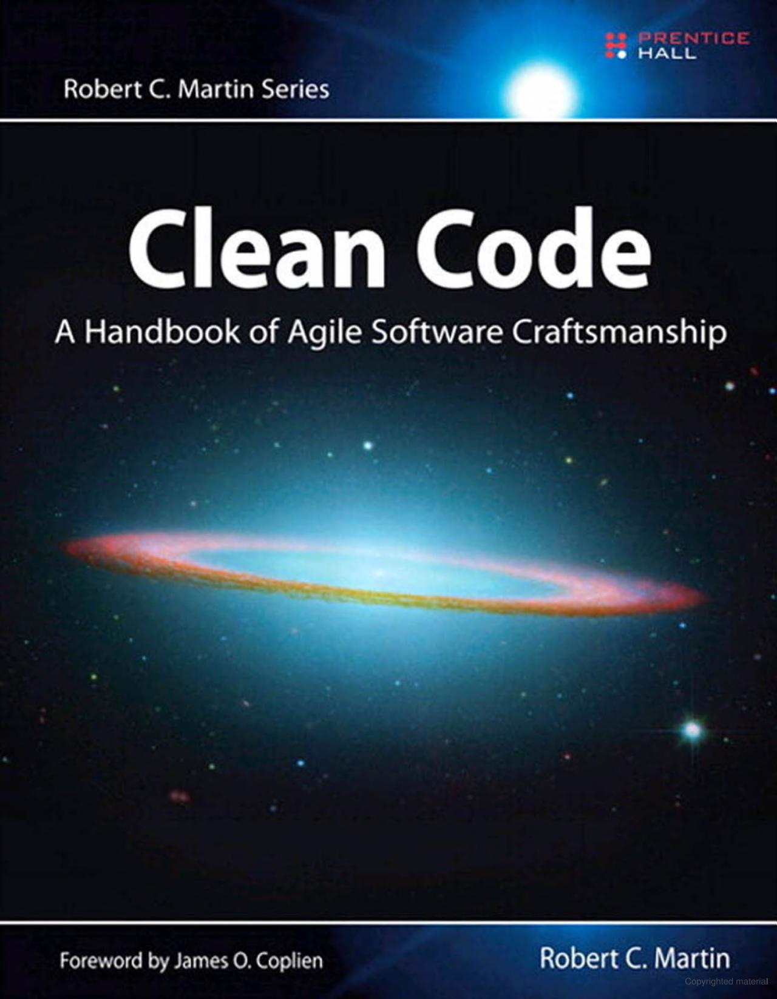
Generic debugging guidelines
- create a Minimal Working Example (MWE)
- minimize problem size
- minimize software components/features involved
- ensure/increase reproducibility (e.g. fix random seeds, thread/process mapping/binding, …)
- if parallel
- minimize machine size (number of threads and/or ranks)
- minimize complexity of parallel interaction (e.g. communication patterns, …)
- minimizes debugging feedback cycle times, amount of memory to inspect, amount of code to consider, overall degree of complexity of component & parallel interaction
- sounds simple, but don’t underestimate its significance
- every change along the way to an MWE gives you more information about the problem
Serial debuggers
gdb- useful for inspecting memory contents and getting call stacks
- can work with multi-threaded programs and also MPI
mpiexec -n X gdb --ex 'run' --ex 'bt' --ex 'quit' ./a.out
- can be used to debug e.g. a single MPI process among many
mpiexec -n 1 gdb ./a.out : -n 7 ./a.out
- can be attached to already-running processes
gdb --pid 12345
valgrind- mostly used for finding memory leaks (can also simulate cache or generate call graph)
- can work with multi-threaded programs (but only concurrent execution!)
- can yield some false positives e.g. for OpenMP related to thread-local storage
- there is a dedicated
valgrind4hpc(mainly handles output redirection from multiple ranks)
Sanitizers (still mostly serial)
- tools that instrument code at compile time to perform checks at runtime
- often lower overhead compared to external tools such as valgrind
- if in doubt, check same issue with multiple tools (e.g. address sanitizers of multiple compilers and valgrind)
- depending on compiler, several sanitizers available, e.g.
- address: buffer overflows, use-after-free, stack corruption, etc.
- undefined behavior: signed integer overflow, float division by zero, negative shift operands, etc.
- thread: detects data races
- leak: detects memory leaks
Example 1: wrong order of arguments in MPI call
Compile with -Wall -Wextra -pedantic:
heat_2D.c: In function 'main':
/usr/lib/.../openmpi/include/mpi.h:402:47: warning: passing argument 2 of 'MPI_Send'
makes integer from pointer without a cast [-Wint-conversion]
402 | #define OMPI_PREDEFINED_GLOBAL(type, global) ((type) ((void *) &(global)))
| ~^~~~~~~~~~~~~~~~~~
| struct ompi_datatype_t *
heat_2D.c:110:25: note: in expansion of macro 'MPI_DOUBLE'
/usr/lib/.../openmpi/include/mpi.h:1784:50: note: expected 'int' but argument is of
type 'struct ompi_datatype_t *'
heat_2D.c:110:37: warning: passing argument 3 of 'MPI_Send'
makes pointer from integer without a cast [-Wint-conversion]
110 | MPI_Send(&A_local[0], MPI_DOUBLE, N, rank - 1, 0, MPI_COMM_WORLD);
| ^
| intExample 2: incorrect array indexing
“program hangs” or “receiving garbage in ghost cells”
$ mpicc heat_2D_mpi.c -o heat_2D_mpi -O3 -fsanitize=undefined,address -g
$ mpiexec -n 2 ./heat_2D_mpi
==1510386==ERROR: AddressSanitizer: heap-buffer-overflow on address 0x61f000002880
READ of size 6144 at 0x61f000002880 thread T0
#0 0x14f80355538a in __interceptor_memcpy sanitizer_common_interceptors.inc:827
#1 0x14f80104b8a2 in ucp_dt_pack (/lib64/libucp.so.0+0x248a2)
#2 0x14f801055403 in ucp_tag_pack_eager_only_dt (/lib64/libucp.so.0+0x2e403)
#3 0x14f800e0f8e8 in uct_mm_ep_am_bcopy (/lib64/libuct.so.0+0x148e8)
#4 0x14f8010557ca in ucp_tag_eager_bcopy_single (/lib64/libucp.so.0+0x2e7ca)
#5 0x14f801061a0d in ucp_tag_send_nbr (/lib64/libucp.so.0+0x3aa0d)
#6 0x14f8032318b0 in mca_pml_ucx_send (libmpi.so.40+0x1a68b0)
#7 0x14f80313d64a in PMPI_Send (libmpi.so.40+0xb264a)
#8 0x402ab6 in main heat_2D_mpi.c:116
#9 0x14f8022add84 in __libc_start_main (/lib64/libc.so.6+0x3ad84)Example 2: incorrect array indexing cont’d
if (rank > 0) {
MPI_Send(&A_local[0], N, MPI_DOUBLE, rank - 1, 0, MPI_COMM_WORLD);
MPI_Recv(ghost_vec_upper, N, MPI_DOUBLE, rank - 1, 1, MPI_COMM_WORLD,
MPI_STATUS_IGNORE);
}
if (rank < size - 1) {
// printf("A_N\n");
// printVec((A_local[rows_local-1]),N);
MPI_Send(&A_local[rows_local-1], N, MPI_DOUBLE, rank + 1, 1, MPI_COMM_WORLD);
MPI_Recv(ghost_vec_lower, N, MPI_DOUBLE, rank + 1, 0, MPI_COMM_WORLD,
MPI_STATUS_IGNORE);
}Example 3: MPI Send/Recv deadlock
$ mustrun -np 2 ./heat_stencil_2D_mpi --must:output stdout
[MUST] MUST configuration ... centralized checks with fall-back application crash
handling (very slow)
[MUST] Search for linked P^nMPI ... not found ... using LD_PRELOAD ... success
[MUST] Executing application:
[MUST-RUNTIME] ============MUST===============
[MUST-RUNTIME] ERROR: MUST detected a deadlock, detailed information is available
in the MUST output file.
[MUST-RUNTIME] ===============================
[MUST-REPORT] Error global: The application issued a set of MPI calls that can
cause a deadlock! A graphical representation of this situation is
available in a detailed deadlock view.
[MUST-REPORT] Reference 1: call MPI_Send@rank 0, threadid 0;
[MUST-REPORT] Stacktrace:
[MUST-REPORT] #0 main@heat_stencil_2D_mpi.c:83Live demo with MUST (https://itc.rwth-aachen.de/must/)!
Example 3: MPI Send/Recv deadlock cont’d
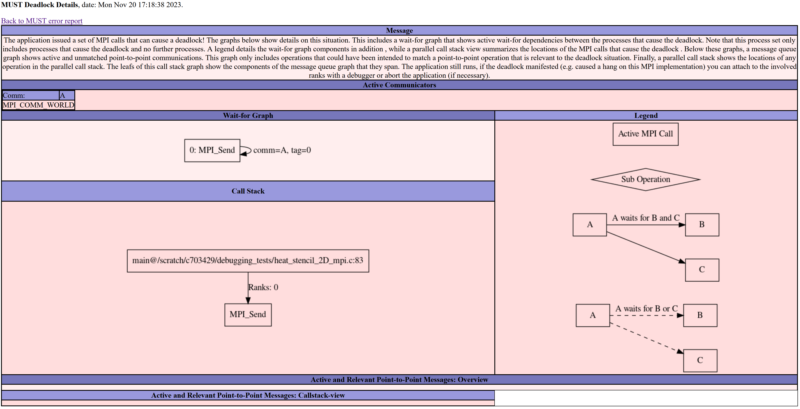
Parallel debuggers
- very little free software
- two commercial top dogs: DDT (Linaro) and TotalView (Perforce Software)
- support OpenMP, MPI, CUDA, etc.
- several features centered around parallelism
- examine variables per rank/thread, examine send/receive queues of MPI libraries, etc.
- still, limited usefulness
- several other software packages
- MUST: MPI runtime error checking tool
- SimGrid: cluster simulator, also for MPI
- Visual Studio: supports debugging MPI programs on Windows
- Intel Inspector: data race detector for multi-threaded programs
- ARCHER: data race detector for OpenMP
- STAT: trace analysis tool to group ranks with similar behavior for easier analysis
- AutomaDeD: uses heuristics to find dissimilarities in rank behaviors
DDT screenshot (overview)
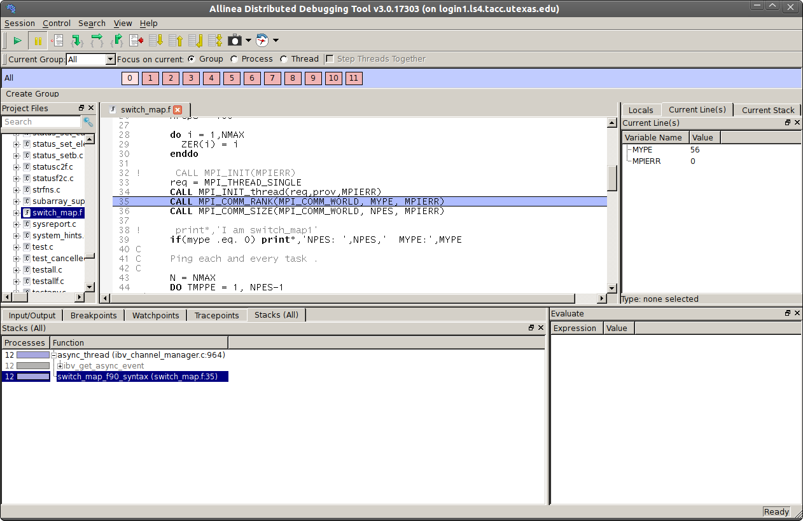
DDT screenshots (communication patterns, data across ranks)
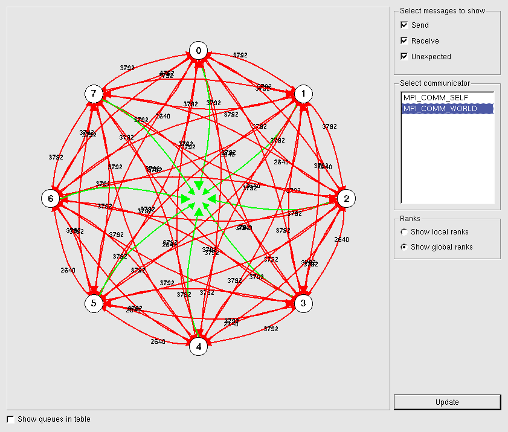
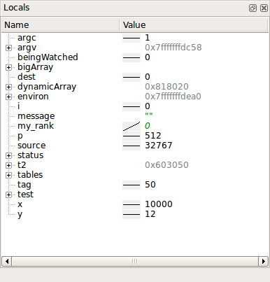
Automatic race condition debugging
- difficult to do automatically and exactly
- statically detecting race conditions is NP-hard
- dynamically detecting race conditions incurs large runtime overhead (every memory access and synchronization action must be logged and checked, usually there are multiple control flow paths to be checked, etc.)
- most solutions resort to simulation and/or heuristics
- several experimental tools available in research
- many issues: limited scope, only apply to a subset of programming languages, etc.
- few “mature” tools, e.g. Intel Inspector
Domain-specific debugging
- visualize the output using appropriate tools
- gnuplot
- matplotlib
- ParaView
- …
- note that this usually prohibits automatic checking
- whenever feasible, unit and integration tests are preferred
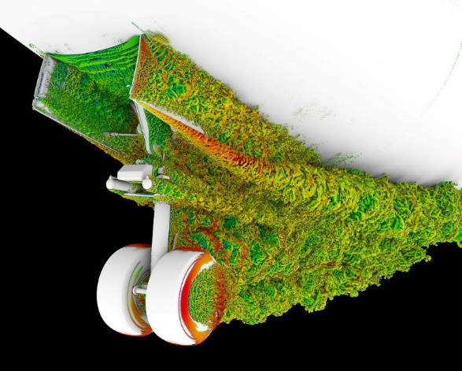

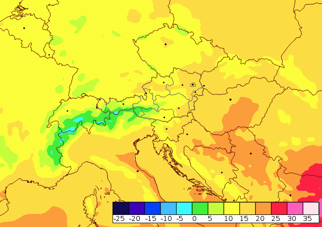
Best approach to debugging parallel programs
- know your algorithm and implementation
- e.g. “a structured grid problem with 2 ghost cells in every direction”
- know your programming models and languages, and their semantics
- “reading the send buffer during an
MPI_Isend(…)is illegal” - “this C++ object’s destructor will be called at the end of the full-expression”
- “reading the send buffer during an
- Don’t trust (seemingly) “automagic” analysis tools too much (LLMs!!!), read and understand the source code when available!
Supercomputer-specific information
- check available SLURM QOS and partitions
- e.g. VSC5 shown on the right
- use interactive jobs
- e.g. LCC3:
srun --nodes=1 --ntasks-per-node=12 --pty bash -i
- e.g. LCC3:
- general good practices
- SLURM’s resource limits, even in production (wall time, RAM)
- e-mail notifications for (some) job state changes
- Don’t run anything parallel on the login node that has even a remote chance of running >1 second!
| QOS name | Partition | Run time limit | Description |
|---|---|---|---|
zen3_0512 |
zen3_0512 |
72h (3 days) | Default |
zen3_1024 |
zen3_1024 |
72h (3 days) | High Memory |
zen3_2048 |
zen3_2048 |
72h (3 days) | Higher Memory |
cascadelake_0384 |
cascadelake_0384 |
72h (3 days) | |
zen2_0256_a40x2 |
zen2_0256_a40x2 |
72h (3 days) | GPU Nodes |
zen3_0512_a100x2 |
zen3_0512_a100x2 |
72h (3 days) | GPU Nodes |
zen3_0512_devel |
5 nodes on zen3_0512 |
10 min | Fast Feedback |
Performance Debugging
Performance debugging (aka “optimization”)
- also sometimes known as “non-functional” debugging (not related to functional output)
- short execution time not necessarily but most often the only goal
- much more tricky than functional debugging
- How do you know the performance “bug” was fixed? Because it’s “fast” now?
- most aspects of functional debugging of sequential programs still apply
- coding guidelines & best practice
- + reproducibility (e.g. fix random seeds, scheduling affinities, …)
- + if required, performance unit tests, performance regression checks
- + performance tools (the ones for sequential programs can also be useful)
- + a lot more knowledge about hardware required
(h)top
- Don’t underestimate the power of
toporhtop! - get a high-level overview of the workload on the system (and its components) and compare to what you expected!
- What’s the ratio between user time and system time?
- high system time could be caused by inefficient I/O, high amount of context switching, etc.
- also useful:
/usr/bin/time -v
- Which CPU cores am I really using?
- the only way to verify affinity policies
- What is the actual memory footprint vs. what it should be?
- detect e.g. memory leaks or inefficient memory management without any additional analysis tools
- What’s the ratio between user time and system time?
htop & affinity
- 2x Intel E5-2699 v3 (18 cores per CPU) in a single node
- htop shows cores 1–18 and 37–54 busy, hence 36 cores total – right?
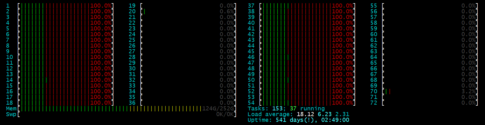
Performance counters via perf
$ perf stat ./heat_stencil_1D_seq
...
28,826,239,136 cycles:u # 2.471 GHz
35,220,856,783 instructions:u # 1.22 insn per cycle
6,711,849,029 branches:u # 575.356 M/sec
1,295,209 branch-misses:u # 0.02% of all branches
1,044 LLC-load-misses:u
26 LLC-store-misses:u
15,312,122 L1-dcache-load-misses:u
476,440,489 L1-dcache-store-misses:uTerminology
- instrumentation
- add source/machine code that will measure something when executed
- can happen manually, automatically, during compilation, linking, runtime, …
- do not confuse with “measurement”
- inclusive/exclusive measurements
- do measurements include data for nested code regions (e.g. functions)?
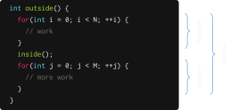
More terminology: sample- vs. trace-based profiling
- sampling
- gives aggregated information of how much time is spent where in the code
- based on statistics: does not provide information on the order of events, their time interval or exact numbers
- easy to accomplish, comparatively low overhead, often no code changes required
- e.g. stop program periodically and read program counter register of the CPU core
- build histogram at the end
- tracing
- produces a detailed log of which event happened at what point in time
- allows to establish order of events, even across processes/nodes if clocks are in sync
- often requires code changes/instrumentation
- e.g. wrap every function call with
get_timestamp(); func_call(); get_timestamp();
- e.g. wrap every function call with
gprof
- sample-based profiler
- also limited code instrumenter for call graph generation and call counts
- very simplistic, not always accurate
- available with every GCC installation
- very simple in its use
- compile with debug symbols (
-g) and gprof support (-pg) - run binary as usual
- run
gprof binary gmon.outto view results - use
--lineto get more detailed, line-based results
- compile with debug symbols (
gprof example: global sum vs. thread-local sum
gprof example cont’d
perf record / perf report
perfalso supports profilingperf record ./applicationperf report -s sym,srcline
- supports time as well as performance counters
- also records a lot of platform information
perf report --header-only- CPU type, OS version, date & time of record, etc.
perf report --header-only -I- includes NUMA topology, cache info, etc.
Samples: 262K of event 'cache-misses:u'
Event count (approx.): 1072111977
Overhead Symbol Source:Line
98.87% [.] main 02_matrix_mul.c:68
1.10% [.] main 02_matrix_mul.c:69
0.01% [.] vfprintf vfprintf+15272
0.01% [.] vfprintf vfprintf+15262
0.00% [.] vfprintf vfprintf+15292
0.00% [.] vfprintf vfprintf+15255gperftools
- sample-based profiler
- formerly Google Performance Tools
- actually a collection of performance analysis tools and high-performance multi-threaded memory allocators
- very simple in its use
- install gperftools library
- link with
-lprofiler - run with environment variable
CPUPROFILE=prof.out - run
pprof binary prof.outto view results (--gvfor graphical visualization)
gperftools example
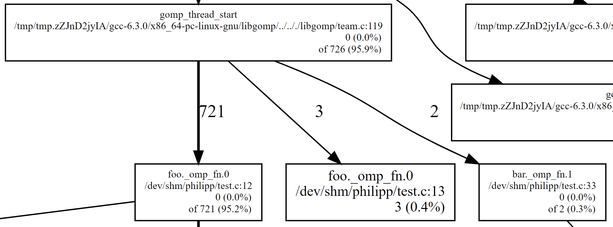
Performance analysis tools for parallel programs
- profiling and analysis software
- Intel Pin: dynamic binary instrumentation
- Intel VTune: performance analysis for multi-threaded programs
- Intel Advisor: dependency, vectorization and cache analysis tool
- AMD CodeXL / NVIDIA Nsight: profiler and debugger for GPUs
- TAU: profiling and tracing suite
- HPCToolkit: profiling and tracing suite, includes GUI tools and tools for mapping binary code to source code
- PAPI: library for access to hardware performance counters
- OProfile: sampling-based profiler with hardware performance counter support
- also, some software built into your IDE, e.g. MS Visual Studio
- analysis and visualization/reporting tools
- Scalasca, Vampir, Paraver, JumpShot, paraprof, CUBE, etc.
- These lists are by far not complete!
TAU & ParaProf
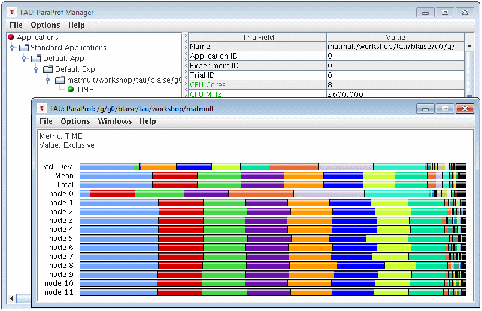
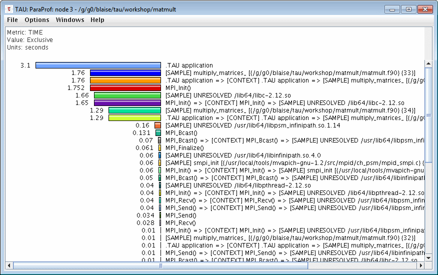
Vampir
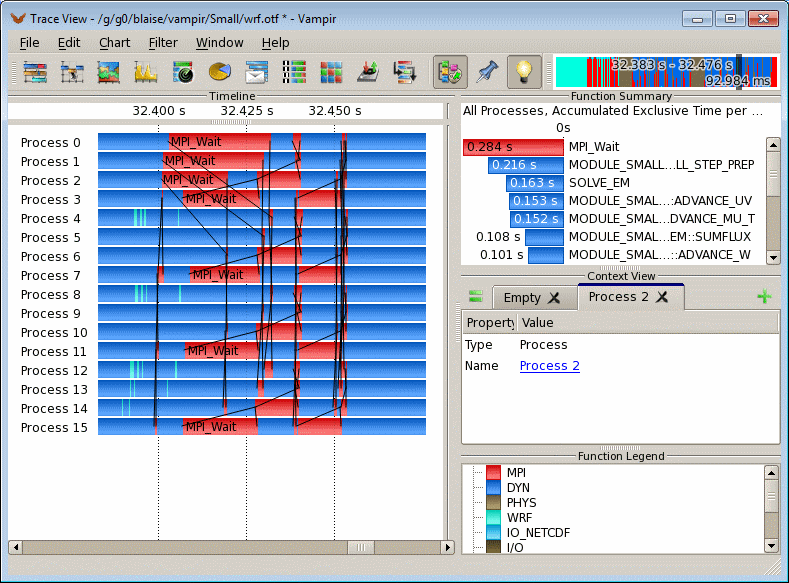
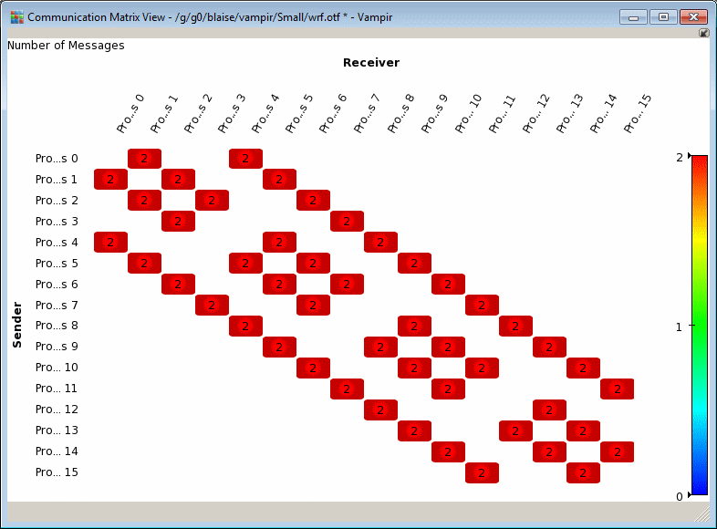
HPCToolkit
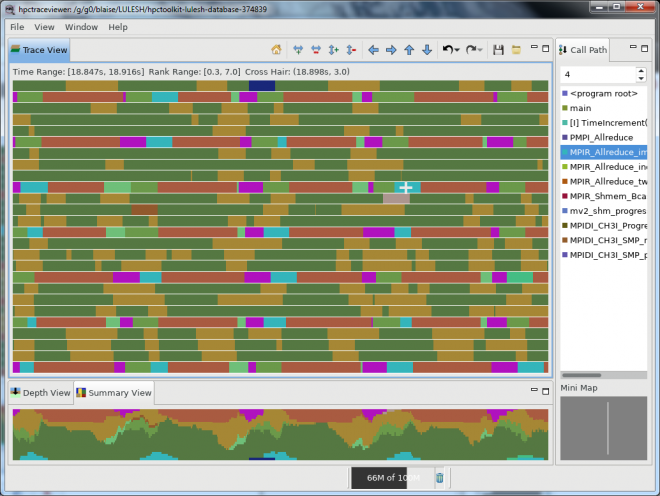
Cube (from Scalasca suite)
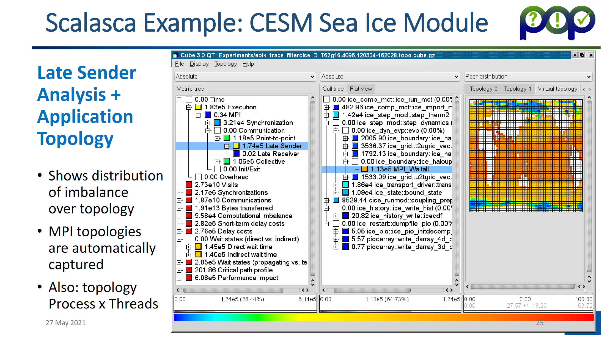
General hints when working with debuggers
-gwhen compiling if source code locations are required- Has nothing to do with optimization levels/flags! You can often use
-O3 -g! - usually negligible performance impact
- Has nothing to do with optimization levels/flags! You can often use
- careful with optimization levels/flags, especially
-O#- function inlining, loop fusion/fission, …
- likely to obfuscate source code locations
- if required and feasible, work in
-O0or temporarily disable conflicting flags - careful:
-O0performance is very different from-O1/2/3/…performance
- check whether child processes and/or threads are included in analysis/reports
- if tracing or otherwise large-overhead instrumentation required, restrict to code regions of interest
Angles of attack in order of benefit
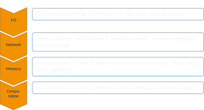
Summary
Summary
- functional debugging
- adhere to coding guidelines and best practice of software engineering
- especially relevant for parallelism: know your programming models and semantics, don’t trust automatic tools blindly
- performance debugging
- don’t underestimate the power of simple tools
- many more advanced tools out there, but not straight-forward to use
- know your hardware and your program hotspots
Image sources
- Yoda: https://www.deviantart.com/biggiepoppa/art/Master-Yoda-Star-Wars-395511111
- DDT: https://portal.tacc.utexas.edu/software/ddt, https://www.sharcnet.ca/help/index.php/Parallel_Debugging_with_DDT, https://developer.arm.com/docs/101136/latest/ddt/viewing-variables-and-data
- Domain-specific debugging: https://twitter.com/maven2mars/status/984440044659159040, https://www.nasa.gov/ames/image-feature/nasa-highlights-simulations-at-supercomputing-conference-like-aircraft-landing-gear, ZAMG Wettervorhersage 06.10.2020 12:00
- TAU & ParaProf: https://hpc.llnl.gov/software/development-environment-software/tau-tuning-and-analysis-utilities
- Vampir: https://hpc.llnl.gov/software/development-environment-software/vampir-vampir-server
- HPCToolkit: https://hpc.llnl.gov/software/development-environment-software/hpc-toolkit
Appendix: Intel Inspector
Intel Inspector
- features
- free
- Linux & Windows version
- automatically finds bugs in multi-threaded programs
- deadlocks
- memory corruption
- race conditions
- vulnerabilities
- supports OpenMP, TBB, Pthreads, Windows threads
- limitations & issues
- slowdown by 1–2 orders of magnitude!
- explicit support only for Intel OpenMP runtime
- error detection only at runtime, only in executed control flow branches
- false positives and negatives possible
OpenMP data race example 1
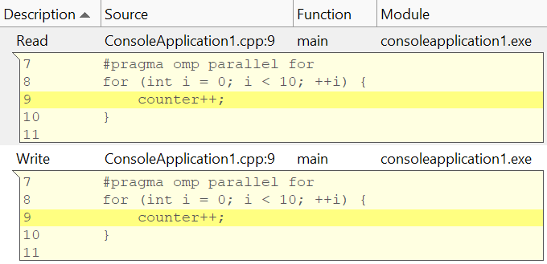
OpenMP data race example 2
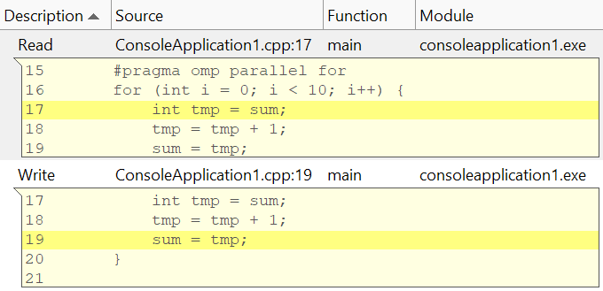
OpenMP data race example 2: wrong fix
(not detected by Intel Inspector 2020)
703308 VO High-Performance Computing — Debugging Parallel Programs